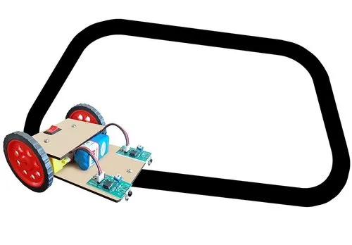

A line follower robot is a robot that autonomously follows a path drawn on the floor. The robot uses IR sensors to sense the surface, and optical sensing arrays to move precisely on the line.
Line follower robots can use a black line on a white surface, or a white line on a black surface.
 Github Code